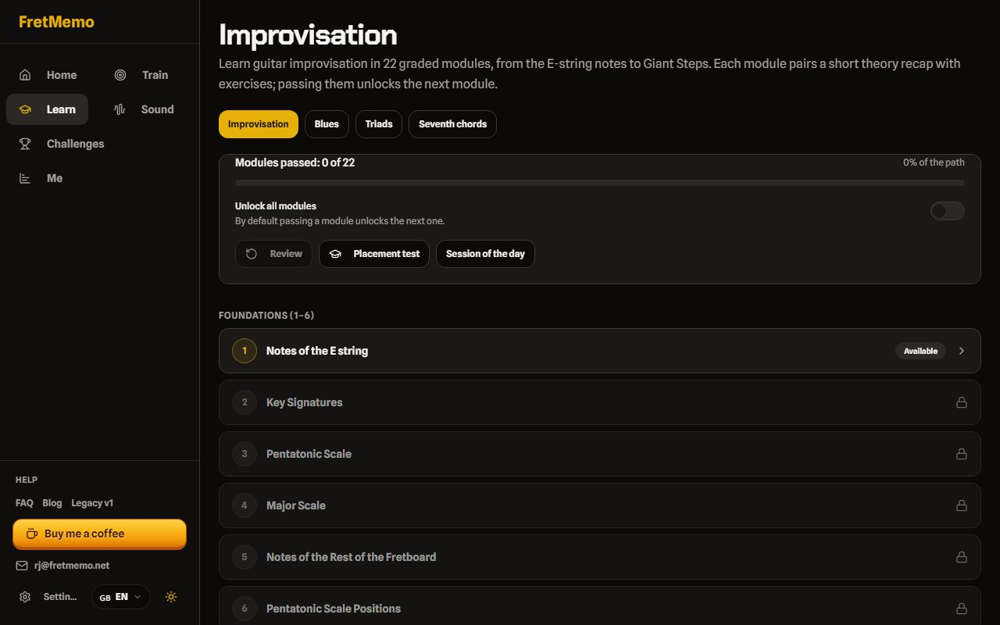

FretMemo has a free path to learn guitar improvisation step by step. It's called "Improvisation" and it has 22 modules in 4 stages, from the notes of the low E string to Giant Steps. Each module is a short theory card followed by exercises: quizzes, fretboard drills, licks and backing loops that can check your target notes through the microphone. It runs in the browser, with no account.
FretMemo started as a tool to learn guitar fretboard notes, and for a long time I wasn't sure what came after that. Knowing where every G is doesn't make you play anything good over a chord change. This path is my answer to "what next".

Why improvising is hard to practice alone
Most of us learn improvisation as a pile of facts: the pentatonic box, the names of the modes, which scale goes with which chord. Then a backing track starts and none of it comes out of the guitar. Naming a mode and playing it over a Dm7 are different skills.
So the rule I set for this path is that whoever finishes it should be able to play what each module teaches. Most modules have you playing over a backing track, and the app checks your notes with the microphone where it can.
The 22 modules in four stages
The order is fixed:
- Foundations (1-6). "Notes of the E string", "Key Signatures", "Pentatonic Scale", "Major Scale", "Notes of the Rest of the Fretboard" and "Pentatonic Scale Positions", which covers all five boxes of G minor pentatonic.
- Harmony (7-11). "Modes", "How Chords Are Built", "Chord/Scale Relationships (Major)", "Triads" and "Arpeggios".
- Playing over changes (12-17). "How to Target Chord Tones", "Voice Leading", "How to Switch Keys While Improvising", "Tritone Substitutions", "Secondary Dominants" and "Borrowed Chords".
- Advanced (18-22). The melodic minor and harmonic minor scales with their modes and chord/scale relationships, and finally "Giant Steps", whose 16-bar form you play in three levels: roots, a 1-2-3-5 pattern on each chord, then arpeggios.
Modules 1 and 5 are passed in FretMemo's fretboard drills, because none of the later work goes well if you're still counting frets to find a root.
How a module works
A module opens with a "Theory" card, then lists its "Exercises". There are seven exercise types: "Quiz", "Diagram with metronome", "Backing loop", "Fretboard practice", "Lick", "Bends with the microphone" and "Voicings on a string set". Extra exercises that don't count towards passing sit under "More exercises". Pass the counted ones and the next module unlocks.
If you already know some theory, the "Placement test" asks one question per quiz module, in order, with four answers each. Modules unlock up to and including your first mistake, and that's where you start. After your first passed module, "Review" gives you 10 mixed questions from the modules you've passed. It uses SM-2, the spaced-repetition method, so topics you haven't seen for a while or got wrong come back first. You need 7 of 10.
Licks are short phrases shown on the fretboard in note order, with playback and transposition. You pass by playing each one 3 times, and the legend marks bends, hammer-ons, pull-offs, slides, vibrato and double stops.
Backing loops and the mic check
The loops are where you improvise. Each one is a chord progression with comping guitar and an optional "Bass". "Style" has 9 options, eight of them with drums: "Free (no drums)", "Rock", "Swing", "Shuffle", "Bossa nova", "Funk", "Reggae", "Ballad (arpeggio)" and "Slow blues (12/8)". "Key" transposes the loop, "Chord tones on the fretboard" shows the notes of the current chord, and the "+5 BPM every 2 successful loops" switch speeds you up as you get it right. Most loops start at 80 BPM.
When a loop has target notes, the "Verify with mic" switch appears. The rule is to play the target note on the downbeat of the new chord, because the app checks the first beat. A loop counts as successful when you hit at least 3/4 of the chords. Use headphones, or the mic will hear the backing track along with your guitar. Without a mic, play the loop and press "Mark loop passed". It counts, with an "Unverified" badge.
How to start the improvisation path
- Open fretmemo.net/improv, or click "Learn" in the menu and then "Path map" on the "Improvisation" card.
- If you know your theory, press "Placement test". Otherwise open module 1, Notes of the E string.
- Read the "Theory" card, then work through the exercises from the top.
- In a loop, press "Start" and set "Style", "Bass", "Key" and the tempo the way you like them.
- Switch on "Verify with mic" when the loop has one, allow the microphone, and put on headphones.
- When a module is passed, go back to the path map and open the next one. Press "Review" every few days.
Standards, session of the day and time played
Below the modules is a "Standards" section with 12 progressions you can play over at any point, without affecting your progress: jazz blues, minor blues, the A sections of Autumn Leaves, Rhythm changes, Take the A Train and All the Things You Are, ii-V-I around the circle of fourths, Blue Bossa, So What, the pop I-V-vi-IV, the 1950s I-vi-IV-V and the Andalusian cadence. Standards have no mic targets, so you mark those loops yourself.
"Session of the day" puts up to three steps together for you: a review quiz (or a module quiz if you haven't passed anything yet), one diagram drill and one backing loop, from your current module or the nearest one that has them. Finishing it is also a daily quest worth 150 XP. Home has a button for it, "Session of the day (15 min)". The Progress page shows "Time played over backing", the time your loops have been running. I like that number more than XP, because it measures the thing that makes you better.
My 20-minute day: the session of the day, then a loop of the current module I haven't passed yet. Once a module feels easy, try it over a song of your own. The chord prompter in the song viewer suggests a scale for each chord of a Guitar Pro file, as the post on how to practice a song on guitar explains.
Limits
- The mic check needs microphone permission, and it only exists in loops with target notes. Free improvisation is always self-marked.
- The check listens to the first beat of each chord. It can tell you hit the target, not whether the rest of your phrase was any good.
- Lick fret positions assume standard tuning.
- Path progress is stored in your browser on one device, and as far as I can tell from the code, the "Progress Backup" in Settings does not include it.
FAQ
How do I start learning guitar improvisation?
Start with the notes on the low E string and the minor pentatonic, then play them over a backing track straight away. FretMemo's free Improvisation path follows that order in 22 modules, from the E string notes to Giant Steps, with most of the work done over backing loops.
How long does it take to learn to improvise on guitar?
FretMemo estimates its 22-module Improvisation path at about 4 to 6 months at 20 minutes a day. That covers the fretboard, scales, modes, arpeggios and playing over chord changes. If you already know some of it, the placement test unlocks modules up to your first wrong answer.
Can I practice improvising over chord changes without a band?
Yes. FretMemo's backing loops play the chords with comping guitar, drums in 8 styles plus a no-drums option, and an optional bass, in any key you pick. With Verify with mic switched on, the app checks that you land on the target note on the first beat of each chord.
Do I need a microphone for the improvisation path?
No. Without a mic you play the loop and press Mark loop passed, and the pass is labelled Unverified. The microphone only adds the check of your target notes.
Start with module 1
Open the Improvisation path, take the placement test or begin with the notes of the E string.
Open the Improvisation path Free, no account, runs in the browser.